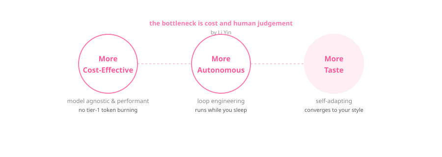

Beyond Loop Engineering
From Vibe Coding to Vertical Agent SaaS
AdaL Bootcamp 2 · Class 1 · July 4, 2026
Vibe Coding
"There's a new kind of coding I call 'vibe coding', where you fully give in to the vibes, embrace exponentials, and forget that the code even exists." — Andrej Karpathy
What it means
Describe what you want → AI writes the code → accept by vibe.
The limit Karpathy flagged
A prompt is typed once and forgotten. The real leverage became the procedure.
Three Eras of Software
| Era | "Code" is… | When |
|---|---|---|
| Software 1.0 | Handwritten instructions | Since forever |
| Software 2.0 | Neural network weights | Karpathy's 2017 essay |
| Software 3.0 | Prompts in natural language | June 2025 keynote |
English became a programming language. The prompt replaced the program.
Source: YC — "Software Is Changing (Again)"
Anthropic's Pivot
"After a few years of prompt engineering being the focus… a new term has come to prominence: context engineering." — Anthropic
Prompt → Context
From writing good instructions to curating the entire token set the model sees each turn.
Three techniques
- Compaction
- Structured note-taking on disk
- Sub-agent architectures
Loop Engineering
"Loop engineering is replacing yourself as the person who prompts the agent. You design the system that does it instead." — Addy Osmani, Google Cloud
Vibe coding
- You type a prompt
- You read the output
- You decide when done
- Runs while you watch
Loop engineering
- You design a procedure
- The loop reads and verifies
- A separate evaluator checks
- Runs while you sleep
The Reality
Loop engineering works — but only for the 1% who can build their own harness.
Hand-crafted harness
Every loop is bespoke: hooks, TOML, skills, cron. "Tedious and of questionable value."
Specs are the bottleneck
"By the time I finish the spec, the agent is waiting for the next feature."
Tokenmaxxing
Each iteration, review, and failure costs tokens. "A money glitch for AI companies."
Sources: HN "The Coming Loop" (245+ comments), Reddit r/ClaudeCode, Claude Code docs
AdaL Changes This
From "build-your-own-harness" to "just describe what you want."

Cost-effective loop engineering — you can't burn tier-1 model tokens in a loop.
AdaL's Full Offering
[1] Coding Agent
- Deep research — sub-agent researches the domain
- Coding — implements, tests, surgical edits
- Browser use — designs & debugs UIs
- Engineer mode — hides complexity, adapts to your tastes
[2] Agent Solution
- Agent SDK — build & deploy agents in your app
- Agent cloud — spin up instantly, no servers
Build with it. Then power it.
Vertical Agent SaaS
| Traditional | AdaL |
|---|---|
| Research domain yourself (weeks) | Deep-research worker (hours) |
| Dev team builds it (months) | Drive AdaL (days) |
| Hire a designer | Browser-use agent designs |
| Wire infra from scratch | Agent SDK + cloud, instant |
| Maintain harness yourself | Engineer mode handles it |
The next wave of SaaS is vertical agent products. AdaL is both the builder and the engine.
→ See the YC Agent Landscape: 2024–2026
The Bottleneck Always Moves
"When coding stops being the bottleneck, planning becomes the bottleneck. When planning is solved, verification becomes the bottleneck. When verification is automated, taste becomes the bottleneck." — Andrej Karpathy

The Ecosystem
| Tool | Leads in |
|---|---|
| Cursor | Vibe coding — the IDE that amazed everyone |
| Claude Code | Context engineering — compaction, sub-agents, hooks |
| OpenCode | Multiple models — model-agnostic, extensible |
| AdaL | Loop engineering + brings taste to the agent |
Each tool pioneered a layer. AdaL leads the loop — and teaches the agent your taste.
Key People
| Person | Contribution |
|---|---|
| Andrej Karpathy | Vibe coding · Software 3.0 · LOOPS.md |
| Addy Osmani | Named "loop engineering" (June 2026) |
| Boris Cherny | "I don't prompt Claude anymore. I write loops." |
| Peter Steinberger | "Design loops that prompt your agents." |